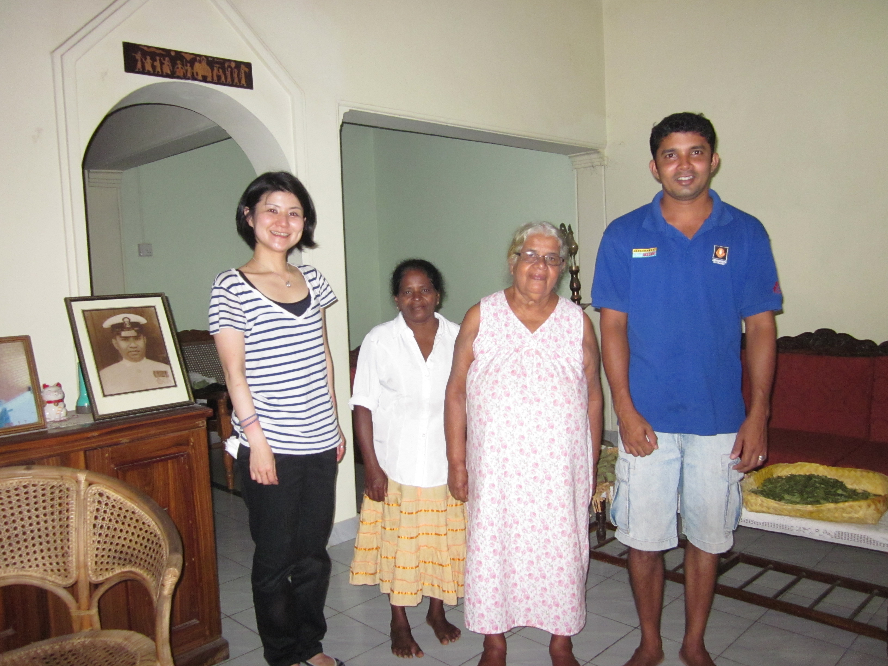
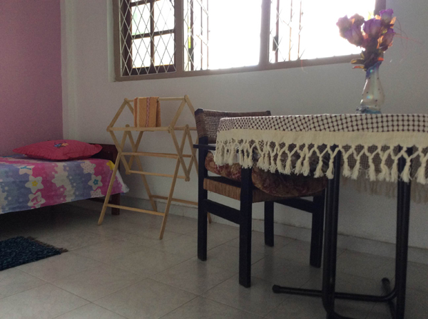
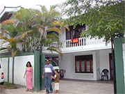
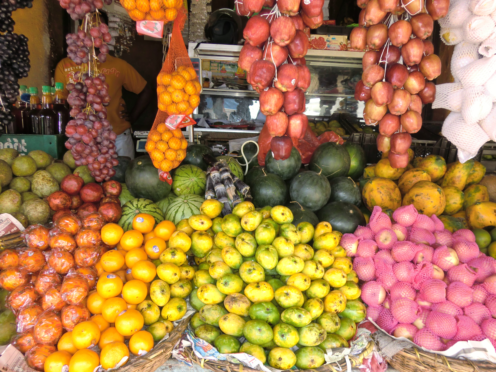
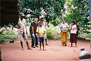
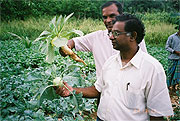

SRI LANKA コロンボ近郊・ホームステイ
英語が「日常の言葉」に近づく、海と緑の島で
旅行だけでは決して味わえない一般家庭での滞在。公用語のシンハラ語に加え、英語が生活に根付いています。初めて海外に行く方も、個人レッスンと日々の生活の英語の積み重ねで、少しずつヒアリングと表現の幅を広げていけます。ほとんどの方が、お一人でのご参加です。
- 英語が生活に根付いた環境
- 個人レッスン＋ホームステイ
- 24時間日本語サポート
スリランカという国
インド洋に浮かぶ島国で、低地から中部の山岳地まで、緑豊かな風景が続きます。海沿いの賑やかな街から、穏やかな内陸の集落まで、景色やリズムは変わります。
公用語には英語に加えシンハラ語もあり、多くの方がシンハラ語を話します。同じスリランカ人同士でも日常的に英語で会話する方もおられます。「生活の中の英語」に、ホームステイ先やレッスンを通じて触れていけます。

街のにぎわいや道の空気感は、日本の都市部とは違います。古い車が多く、乾いている日は埃っぽく感じることもあるでしょう。風邪を防ぐ目的で、のど飴や喉の殺菌スプレー、マスクを用意しておくと、心おきなく過ごしやすくなります。
食卓や掃除、時間の合わせ方も家によって違います。当たり前の境界線が国で違うことを、学びの一部として少し遊び心を持てると、ホームステイの時間が身近になります。
安心して滞在するために
ホームステイ先は、治安の安定したエリアのご家庭を選定しています。コロンボまでおおむね20km〜40kmのコロンボ郊外のミヌワンゴダやワラカポーラ地区で、ご滞在いただきます。衛生面でも日本人の方が落ち着いてお過ごしいただけるお宅を選んでいます。
最新の情勢や渡航の注意点は、外務省 海外安全ホームページも併せてご確認ください。
自然災害（津波）の位置づけ
2004年の津波災害時は、当社のお客様およびホストファミリーに被害は一切ありませんでした。多くのホームステイ先は海岸から直線距離にしておおむね20〜30km程度内陸にあり、今後も津波の影響は受けにくい立地です。
ホームステイで学ぶ英語
参加費用には、個人レッスン料に加え、ホームステイでの滞在費と、ホストファミリー宅での毎日3食の家庭料理、そして低開発村視察が含まれています。ホストファミリーと日々の小さなコミュニケーションを重ねながら、スリランカでの生活を存分に味わっていただけます。
滞在先の目安
皆さまの滞在されるホームステイ先は、ワラカポーラ（コロンボから約40km）一帯の、中流クラス以上のご家庭が中心です。ホストファミリーの英語力は家庭によって差があります（幼いお子さまは英語で話せない場合もありますが、英語を話せる家族の多い家庭を選出しています）。ご自身の英語力と合わないと感じられた場合は、お申し出のうえ変更のご相談ができます。
受入地域や情勢の補足は、外務省 海外安全ホームページ と よくある質問 を併せてご確認ください。
食事・トイレまわり・電圧など、暮らしの要点は、下の見出しに沿って整理しています。国全体の雰囲気や横断的なQ&Aは、スリランカ現地情報 と よくある質問（現地生活） もご利用ください。
ホームステイ先の一例
下記は、これまでご紹介してきたホームステイ先のイメージです。家の大きさ・日当たり・設備は、家庭や時期によってさまざまです。角度の違う例や、複数枚のイメージは、出発までの流れ（ホームステイ先のイメージ）のギャラリーも併せてご覧ください。
お部屋
個室に寝具・机・いすが用意されています。


食事
スリランカの家庭では3食カレーが一般的です。どうしても合わない場合は、食材をご自身で購入して調理することも可能です。台所を使うときはホストファミリーに一声かけ、お手伝いの前にもお声がけください。


果物は季節によって価格が大きく変わります。季節外しのものをむやみに求めないようお願いします。
食卓のマナー
家庭では手で食べることも多く、一般的に右手でお取りください。スリランカでは、まずお客様に先に召し上がっていただき、お客様がお済みになってから家族が食べるのがよいとされることもあります。一緒に食べたいときは「一緒に食べましょう」と伝えると、食卓が和らぎやすいです。昼食は家庭によっては比較的厚めになることもあります。
飲み水
多くの家庭では井戸水を使用しています。飲用は必ず沸騰した水か、ご自身で購入したミネラルウォーターをご利用ください。ホストに沸騰水の提供をお願いしていますが、飲む前にご自身でもご確認ください。到着初日に1.5リットルのミネラルウォーターをお渡しします（参加費用に含まれる扱いは 費用の内訳 と併せてご確認ください）。
電話のご利用
ご利用の際はホストファミリーの許可を得てください。通話料はご自身のご負担とし、受話は可能ですが、一回あたり長くなりすぎないよう最大15分程度を目安としてください。
電圧・コンセント
スリランカの一般家庭の電圧はおおむね230〜240Vです。日本から持参する機器は変圧器の併用をおすすめします。定格が範囲内でも、瞬間的に高い電流が流れることがあるとの報告があります。コンセントの形状は日本と異なるため、変換プラグもご用意ください。持ち物の詳細は 出発までの流れ や よくある質問 と併せてご確認ください。
バスルーム・トイレ
ご使用の際はホストに一声おかけください。多くの家庭は水シャワーです。お湯をご希望の場合はホストにお申し出ください。
現地の一般的な習慣では、用を足したあと左手で水を使うこともあります。ホームステイ先では、皆さまがトイレットペーパーをお使いいただけるよう伝えています。補充が必要なときはホストにお知らせください（当たり前の置き方が家庭で違うため、足りなくなっていることに気づかない場合もあります）。観光など外出先では、少量を持参しておくと安心です。
洗濯
洗濯機のない家庭も多く、手洗いになる場合があります。
衛生・虫よけ
部屋やトイレまわりは、できる限り清潔な状態で迎えられるようホストにお願いしています。それでも家のクセや季節で、日本の感覚と違うことがあるかもしれません。気になるときは遠慮なくホストか、現地受入の JASRI に相談してください。宗教的な背景で生き物を殺さない習慣もあるため、蟻や蚊をそのままにしている家庭もあります。不快なときはその都度、退治や対策をお願いください。肌の露出に合わせて虫よけを塗る、室内では蚊取り線香を使うなど、日々の工夫をおすすめします。
破損・体調不良の際
物の破損や通院が必要なときは、ご加入の海外旅行保険の範囲でご対応ください。
現地到着から帰国まで
空港のお出迎えからホームステイ先、日々の過ごし方、帰国までの流れの要約です。日本を出発されるまでの手続きの概要は、出発までの流れをご覧ください。
1. スリランカ到着
コロンボの空港では、現地受入団体・Japan SriLanka Research Institute（JASRI）のスタッフがお出迎えします。両替は税関を出た到着フロアの銀行窓口等で。到着ロビー外で、お名前入りのボードを掲げてお待ちしています。
2. ホームステイ先へ
JASRIの車でホームステイ先へ送迎します。初対面のホストファミリーと自己紹介をし、家庭のルールを確認してください。
3. レッスンの始まり
英語教師がホームステイ先に訪れ、リビングや庭のテーブル等でレッスンを行います。上達の近道は「話すこと」。間違いを恐れずに会話に挑戦してみてください。
4. 日々の生活
レッスンのない時間やお休みの日は、学習・ボランティア・ホストや友人との交流・観光など、現地の生活を満喫できます。スリランカ料理のレッスンは、ホストマザーから無料で学べる機会があります。紅茶（ミルクティー）をいつでも淹れてもらえる家庭も多いです。
5. カントリーサイド（低開発村）の暮らし体験
スリランカのカントリーサイド（低開発村）を訪れ、地元の方々と交流します。学びの機会を得にくい子どもや若者に出会うことも多く、農業や裁縫といった暮らしの工夫と、伝統的な村の日常に触れながら、海沿いの滞在とは違うスリランカの表情を感じる時間になります。


日程は、レッスンのない日に日帰りで行います。具体的な日時は、到着後に現地受入団体からご連絡します。
送迎は、現地受入団体の担当が車で迎えに上がり、帰着まで同行します。同時期にほかの参加者がいらっしゃる場合は一緒に、お一人の場合も送迎のもとで参加します。
昼食は、地元の方も利用するレストランでとります。参加費用に含まれる扱いは、費用の内訳（低開発村の暮らし体験・昼食含む）とあわせてご確認ください。
活動系の希望や、地域の関わり方のくわしい例は ボランティア を、細かいご質問は よくある質問 もあわせてご覧ください。
6. レッスン最終日
教師・友人との最終日の日程を互いに確認しておきましょう。
7. 帰国に向けて
帰国便に合わせ、現地受入団体へ迎えの時間を連絡してください。お土産の購入のため早めの空港到着をおすすめします。
個人レッスンと、日々の目安
全コース、担当の先生による個人レッスンが基本です。滞在中の週5日、1日あたりの英語のレッスン時間の目安は4時間前後（コースにより異なります）。週のうち1日程度は、お休みや振替の扱いがある場合がございます。
下のタイムラインは目安です。移動日や、ご自身のペースに応じて前後する日もあります。
教師のプロフィール、欠席と振替、レッスン内容、TOEFL（くわしい説明）
英語教師について
英語教師のスリランカ人の先生は、学校の教員として現役で英語を教えていらっしゃる方や、自宅に英語の教室を持ち塾を開いている方など、経験豊富な方を選定しています。個人レッスンを15時半前後から始めるのは、学校の授業のあと、ご自宅（ホスト先）に家庭教師としてお越しいただくためです。合う先生を選定していますが、万が一不都合があれば、別の先生に交代することも可能です。
英語教育指導者 ソーマ・カルボウィラ先生
- 1956年 ロンドンG.C.Eアドバンス卒業
- 1963年 英語教師上級レベル資格取得
- 英国エセックス大学 応用言語学・英語教授法 ディプロマ修了
- 米国テンプル大学 シラバスデザイン・カリキュラム開発 専攻課程修了
- スリランカ中等学校 新英語教育教材作成委員会 委員
レッスンの欠席・振替
- 出発日の10日より前に、一部レッスンのキャンセルが分かっている場合、送金手数料を差し引いたレッスン料のキャンセル分を返金します。申込段階で休みが決まっている場合は、早めにご申し出ください。
- 渡航後は、授業の稼動日の前日（月曜休みの場合は金曜）までに現地受入団体へお休みの連絡があった分について、別日に振替します。振替を受けられない場合は振替受講の権利放棄とみなし、返金は行いません。
- 当日の休みの連絡については、振替・返金はできません。振替レッスンを休む場合も同様です。
英語レッスンで扱うこと
コミュニケーション・リスニング・語彙を柱に、ライティング・リーディング・文法の強化も行います。スピーキングに重点を置き、社会情勢などのトピックでのディスカッション、リスニング、発音の練習をします。ライティングは毎日宿題で取り組み、次回のレッスンで先生がチェックします。ご希望に沿った内容にもできますので、お申し付けください。詳しいカリキュラムは 英語レッスンシラバスを参照してください。
TOEFL 向けレッスン
TOEFL 用のレッスンを受けられます。事前にお申し付けください。必要期間の目安は1〜2ヶ月程度です。専門の先生によるため、追加で2万5千円〜5万円程度の費用がかかります。
レッスンが入っていない時間帯は ボランティア活動 への参加も可能です（希望・日程による）。
24時間、日本語でつながるサポート
スリランカの現地受入団体は Japan SriLanka Research Institute（JASRI） です。到着前後の心配事や体調の相談など、英語に不安があっても、生活面を一つひとつ確認しながら進められます。
JASRI と担当者
日々のお世話の中心となるのは、英語教師でもある マーネル・クマーリ 氏です。日本に10年滞在した経験があり、日本語は問題なく話せるため、何でも相談しやすい方です。
24時間 現地サポート（日本語可）
現地では、必要に応じて24時間のサポートを行います。何かあれば、遠慮なくお申し出ください。
学びのあとに、社会との接点
学校訪問や子どもとの交流、地域の活動など、希望とスケジュールに応じて関わるボランティアをお申し出いただけます。低開発村の暮らし体験のあと、さらに触れ合いを深めたい方の導線にもなっています（費用外の交通費などは料金ページの注記を参照ください）。
参加費用・レッスン時間
スリランカは短期から長期まで、さまざまな日数のコースをご用意しています。まず費用感を掴みやすい例を下に示します。全コース・税の扱い・注意事項の全文は 料金ページ（スリランカ）でご確認ください。
短期
7日間
92,000円
約2週間
15日間
164,500円
1ヶ月前後
30日間
269,500円
フライトの都合で日程が上記と異なる場合、参加条件、追加のレッスン時間（有料）などの詳細は、各種ご案内と料金ページに従ってください。スリランカ人教師の個人レッスンが基本です。
参加費用の内訳（含まれるもの・含まれないもの）
参加費用に含まれるもの
- 個人レッスン料（ノート・教材支給）
- ホームステイ滞在費
- ホストファミリー宅での全食事（1日3食）
- 低開発村の暮らし体験（昼食含む）
- 現地空港・滞在先間、低開発村の暮らし体験時の送迎
- スリランカ料理レッスン
- 紅茶（随時・お菓子または果物付き）
- ミネラルウォーター1.5リットル（到着初日にお渡し）
- アーユルヴェーダ石鹸・歯磨き粉 各1
- ホームステイエリアの中心タウンの案内
- 24時間現地サポート（日本語可）
- 1ヶ月以上滞在の場合、ビザ延長手続きの同行
- 手配料
参加費用に含まれないもの
- 滞在中のお小遣い
- 航空券
- 海外旅行保険
- ホストの食事が合わない場合、ご自身で用意する食事代
- ボランティア参加時の交通費など
参加された方の声
30〜40代の女性の方を含む、スリランカ参加の抜粋です。国別の一覧は参加者の声からもご覧ください。
-

「スリランカでのホームステイの経験は、Awesome！！！の一言につきます。本当に本当にスペシャルな時間でした！！！」
-

「ホストファミリーには家族のように接していただき、とっても元気に過ごせました。日常的に一緒に行動することで、観光旅行では体験できないスリランカ体験ができたと思います。」
参加者レポート（抜粋）
公開中のレポートのうち、当時の暮らしの雰囲気がわかる抜粋を置いています。
齋藤碧さま（2007年8〜9月ご参加）— 1日の流れ

当時のレポートでは、早朝の起床、教室での個人レッスン、市場散策、夕方の帰宅と夕食、といった一日の流れを追える記述がありました。
スリランカ現地情報
食事・交通・安全・文化・暮らしの要点を、出発前のイメージづくり用に整理しました。ホームステイやレッスンのくわしい説明は上記セクション、横断的なQ&Aは よくある質問 もご利用ください。
食事
家庭ではカレーを中心とした日々の食卓が多く、手で召し上がることもあります。歓待として先にお客様が食べる、といった流れもあります。くわしくは 食卓のマナー、ホームステイで学ぶ英語 の食事のところを参照ください。
交通
空港到着後は、現地受入の JASRI の送迎でホームステイ先へ向かいます。日常の移動は、ホストや先生と相談のうえ、タクシーや三輪のタクタク等を利用される方が多いです。低開発村の暮らし体験など、プログラムに含まれる区間の送迎は現地スタッフが手配します。費用に含まれる範囲は 参加費用の内訳 と 料金・コース をあわせてご確認ください。
安全
受入エリアの選定や、落ち着いた暮らしのペースを重視しています。自然災害の考え方は 津波の注記、渡航の一般情報は 外務省 海外安全ホームページ をご覧ください。一人参加の安心感は よくある質問 も参考にしてください。
文化
仏教・ヒンドゥー文化の影響が色濃く、寺社や年中行事、紅茶や家庭のミルクティーなど、生活のなかに文化が息づいています。料理のレッスンや、低開発村エリアでの交流は、観光だけでは得にくい時間につながります。関わり方の例は ボランティア もご覧ください。
現地生活Tips
街は埃っぽく感じる日もあるため、のど飴・飲み物・小さなタオルがあると安心です。電圧・プラグは 電圧・コンセント、トイレや清潔・虫よけは 衛生・虫よけ を参照ください。日本の電化製品は変圧器・変換プラグを。横断的なQ&Aは 変圧器、トイレと清潔 にもまとめています。

国の雰囲気と費用のイメージが整いましたら、資料でじっくりご確認ください
日数、含まれるもの、心配事の整理。必要に応じて よくある質問 も併せてご覧ください。事前に目を通しておいていただけると、お問い合わせ内容がまとめやすくなります。
お電話でのご相談 03-6770-6191